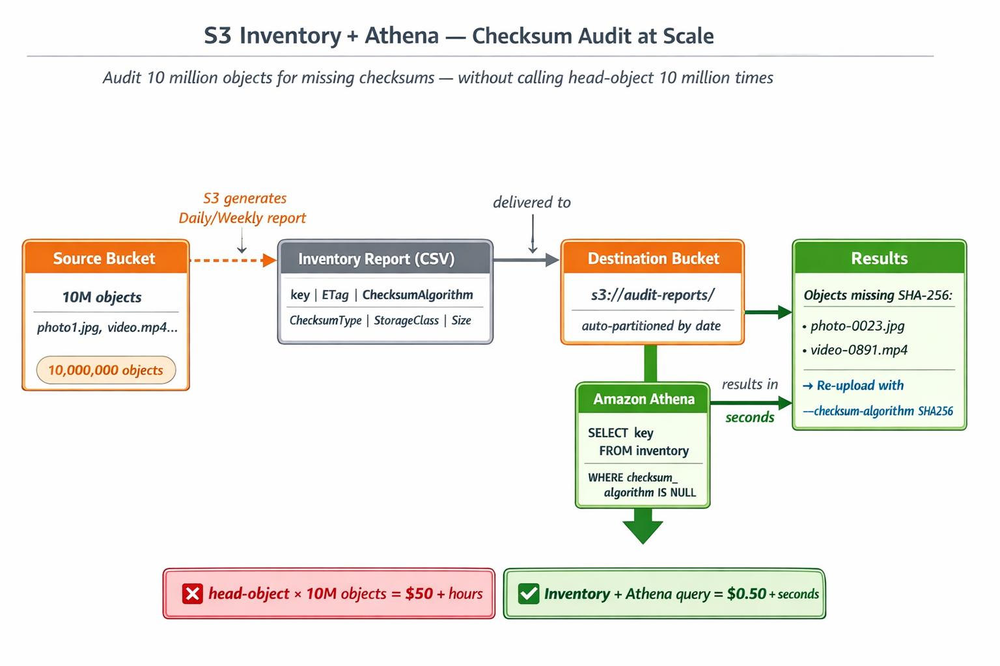

Calling head-object for every object works for hundreds of files. For
millions of objects it takes hours and costs tens of dollars. S3 Inventory solves this —
a scheduled report listing every object with its checksum, queryable in seconds with
Athena.

Figure 24: S3 Inventory + Athena — audit 10 million
objects for missing checksums in seconds
Step 1 — Configure S3 Inventory on your lab bucket
SOURCE_BUCKET="your-name-checksum-extended-lab"
DEST_BUCKET="your-name-checksum-inventory-dest"
ACCOUNT_ID=$(aws sts get-caller-identity --query Account --output text)
# Create destination bucket for inventory reports
aws s3 mb s3://$DEST_BUCKET --region us-east-1
# Add bucket policy to allow S3 to deliver inventory
aws s3api put-bucket-policy \
--bucket "$DEST_BUCKET" \
--policy "{
\"Version\": \"2012-10-17\",
\"Statement\": [{
\"Sid\": \"S3InventoryPolicy\",
\"Effect\": \"Allow\",
\"Principal\": {\"Service\": \"s3.amazonaws.com\"},
\"Action\": \"s3:PutObject\",
\"Resource\": \"arn:aws:s3:::${DEST_BUCKET}/*\",
\"Condition\": {
\"ArnLike\": {\"aws:SourceArn\": \"arn:aws:s3:::${SOURCE_BUCKET}\"},
\"StringEquals\": {\"aws:SourceAccount\": \"${ACCOUNT_ID}\"}
}
}]
}"
# Configure inventory — request checksum fields
aws s3api put-bucket-inventory-configuration \
--bucket "$SOURCE_BUCKET" \
--id checksum-audit-inventory \
--inventory-configuration "{
\"Id\": \"checksum-audit-inventory\",
\"IsEnabled\": true,
\"Destination\": {
\"S3BucketDestination\": {
\"Bucket\": \"arn:aws:s3:::${DEST_BUCKET}\",
\"Format\": \"CSV\"
}
},
\"Schedule\": {\"Frequency\": \"Daily\"},
\"OptionalFields\": [\"ETag\", \"Size\", \"StorageClass\", \"ChecksumAlgorithm\"],
\"IncludedObjectVersions\": \"Current\"
}"
echo "Inventory configured — first report arrives within 24 hours"

Figure 25: S3 Inventory configured with ChecksumAlgorithm
as an optional field
Step 2 — Simulate the inventory report (no need to wait 24 hours)
# Generate a simulated inventory CSV to work with now
# In production this would be the actual delivered report
mkdir -p inventory-simulation
cat > inventory-simulation/sample-inventory.csv << 'EOF'
"photo1.jpg","d41d8cd98f00b204","669102","STANDARD","SHA256"
"contract.txt","d41d8cd98f00b205","4821","STANDARD",""
"dataset.csv","d41d8cd98f00b206","12043","STANDARD","SHA256"
"old-file.pdf","d41d8cd98f00b207","893421","STANDARD_IA",""
"backup.tar","d41d8cd98f00b208","5242880","STANDARD","CRC32C"
"legacy-doc.txt","d41d8cd98f00b209","7823","STANDARD",""
EOF
echo "Simulated inventory CSV created with 6 objects (3 with checksums, 3 without)"
cat inventory-simulation/sample-inventory.csv
Step 3 — Query the inventory to find objects missing checksums
# Python query simulating what Athena would do
python3 << 'EOF'
import csv
missing = []
has_checksum = []
with open('inventory-simulation/sample-inventory.csv') as f:
for row in csv.reader(f):
key, etag, size, storage_class, checksum_algo = row
if not checksum_algo.strip():
missing.append({'key': key, 'size': int(size), 'storage': storage_class})
else:
has_checksum.append({'key': key, 'algo': checksum_algo})
print(f"\n=== Inventory Analysis ===")
print(f"Total objects: {len(missing) + len(has_checksum)}")
print(f"With checksums: {len(has_checksum)}")
print(f"Missing checksums: {len(missing)}")
print(f"\n=== Objects Requiring Re-Upload ===")
for obj in missing:
print(f" ❌ {obj['key']} ({obj['size']} bytes, {obj['storage']})")
print(f"\n=== Remediation Commands ===")
for obj in missing:
print(f"aws s3api put-object --bucket BUCKET --key {obj['key']} --body {obj['key']} --checksum-algorithm SHA256")
EOF
Step 4 — (Optional) If using real Athena with a real inventory report
# After the inventory report arrives, create an Athena table:
# In Athena console or via CLI, run this DDL:
cat << 'EOF'
CREATE EXTERNAL TABLE s3_inventory (
bucket string,
key string,
version_id string,
is_latest boolean,
is_delete_marker boolean,
size bigint,
last_modified_date timestamp,
e_tag string,
storage_class string,
checksum_algorithm string
)
ROW FORMAT SERDE 'org.apache.hadoop.hive.serde2.OpenCSVSerde'
LOCATION 's3://your-name-checksum-inventory-dest/your-name-checksum-extended-lab/'
TBLPROPERTIES ('skip.header.line.count'='1');
-- Query: Find all objects missing a checksum
SELECT key, storage_class, size
FROM s3_inventory
WHERE checksum_algorithm IS NULL OR checksum_algorithm = ''
ORDER BY size DESC;
EOF
echo "Above DDL creates an Athena table over the inventory report"
echo "The SELECT query finds every object missing a checksum in seconds"

Figure 26: S3 Inventory report delivered to destination
bucket — queryable with Athena
Cleanup
aws s3api delete-bucket-inventory-configuration \
--bucket your-name-checksum-extended-lab \
--id checksum-audit-inventory 2>/dev/null || true
aws s3 rm s3://$DEST_BUCKET --recursive 2>/dev/null || true
aws s3 rb s3://$DEST_BUCKET 2>/dev/null || true
rm -rf inventory-simulation/